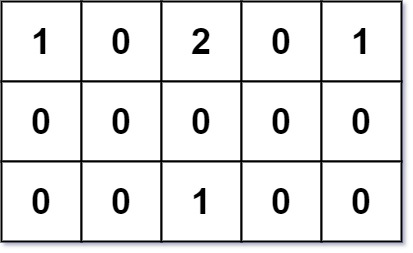

| Category | Difficulty | Likes | Dislikes |
|---|---|---|---|
| Algorithms | Hard | 1986 | 343 |
facebook | amazon | doordash | google | microsoft | tiktok | bloomberg | wix | snapchat | bytedance | zenefits
You are given an m x n grid grid of values 0, 1, or 2, where:
0 marks an empty land that you can pass by freely,1 marks a building that you cannot pass through, and2 marks an obstacle that you cannot pass through.You want to build a house on an empty land that reaches all buildings in the shortest total travel distance. You can only move up, down, left, and right.
Return the shortest travel distance for such a house. If it is not possible to build such a house according to the above rules, return -1.
The total travel distance is the sum of the distances between the houses of the friends and the meeting point.
Example 1:

Input: grid = [[1,0,2,0,1],[0,0,0,0,0],[0,0,1,0,0]]
Output: 7
Explanation: Given three buildings at (0,0), (0,4), (2,2), and an obstacle at (0,2).
The point (1,2) is an ideal empty land to build a house, as the total travel distance of 3+3+1=7 is minimal.
So return 7.Example 2:
Input: grid = [[1,0]]
Output: 1Example 3:
Input: grid = [[1]]
Output: -1
Constraints:
m == grid.lengthn == grid[i].length1 <= m, n <= 50grid[i][j] is either 0, 1, or 2.grid.